Головна / TRIZ навчання / Старт TRIZ
1–4 класи · 40 задач
Старт TRIZ
Побачте проблему. Придумайте рішення. Спробуйте!

Задачі 6–15
Натисніть на назву задачі, щоб відкрити інтерактивний урок.
Оберіть задачу за назвою. Кожна відкривається на окремій сторінці.
Побут і турбота
 Задача 01Парасолька, що не залишає калюж1–2 класи
Задача 01Парасолька, що не залишає калюж1–2 класи Задача 02Помітний рюкзак1–3 класи
Задача 02Помітний рюкзак1–3 класи Задача 03Годівничка без розсипаного зерна2–4 класи
Задача 03Годівничка без розсипаного зерна2–4 класи Задача 04Вазон під час канікул2–4 класи
Задача 04Вазон під час канікул2–4 класи Задача 05Паперовий міст через струмок3–4 класиЗадача 06Стільці, які не шумлять1–2 класиЗадача 07Прохолодна кімната влітку3–4 класи
Задача 05Паперовий міст через струмок3–4 класиЗадача 06Стільці, які не шумлять1–2 класиЗадача 07Прохолодна кімната влітку3–4 класи Задача 08Кришка без дотику2–4 класи
Задача 08Кришка без дотику2–4 класиПредмети та простір
 Задача 09Олівець на похилій парті1–2 класиЗадача 10Книжка без підставки1–2 класиЗадача 11Попередження про мокру підлогу1–2 класиЗадача 12Коробка для шкільного ярмарку1–2 класи
Задача 09Олівець на похилій парті1–2 класиЗадача 10Книжка без підставки1–2 класиЗадача 11Попередження про мокру підлогу1–2 класиЗадача 12Коробка для шкільного ярмарку1–2 класи Задача 13Олівці знаходяться за секунду1–2 класиЗадача 14Двері без гучного удару1–3 класиЗадача 15Вода у вузьку пляшку1–3 класи
Задача 13Олівці знаходяться за секунду1–2 класиЗадача 14Двері без гучного удару1–3 класиЗадача 15Вода у вузьку пляшку1–3 класи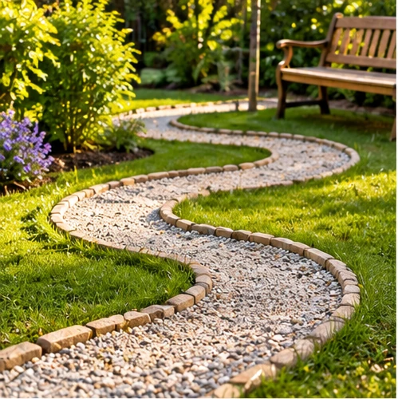
Задача 16Довга стежка в маленькому саду1–3 класи Задача 17Взуття після дощу2–3 класи
Задача 17Взуття після дощу2–3 класи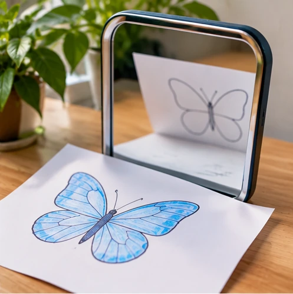
Задача 18Два малюнки одночасно2–3 класи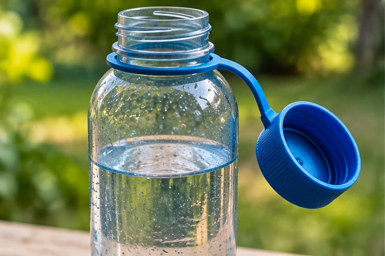
Задача 19Кришечка, яка залишається поруч2–3 класи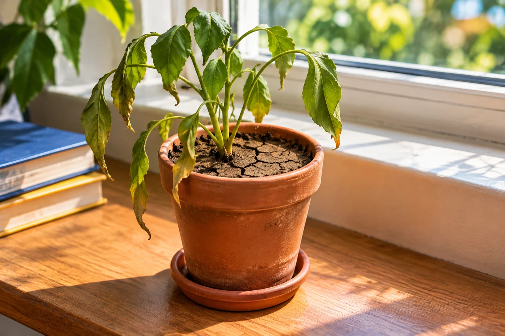
Задача 20Вода для грядки по краплині2–3 класиКонструювання й природа
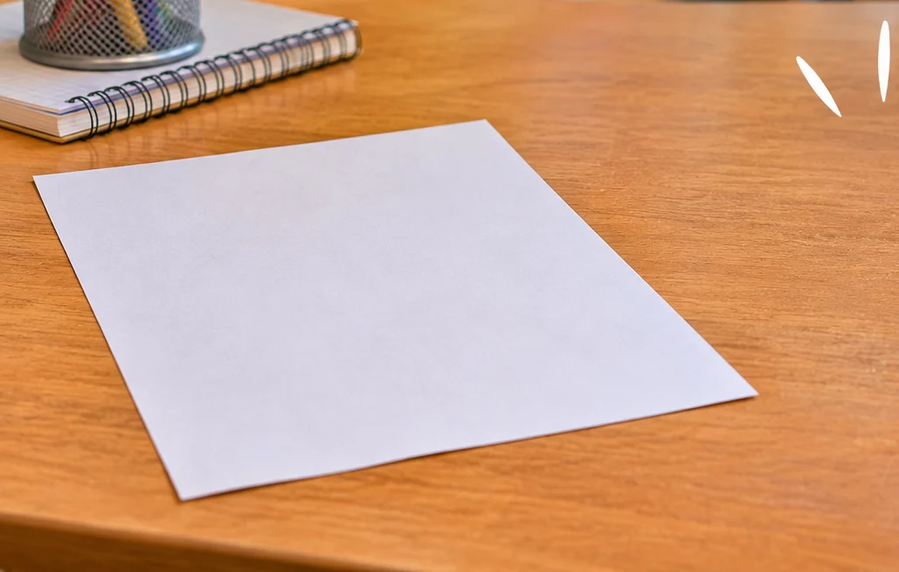
Задача 21Вежа з одного аркуша2–4 класи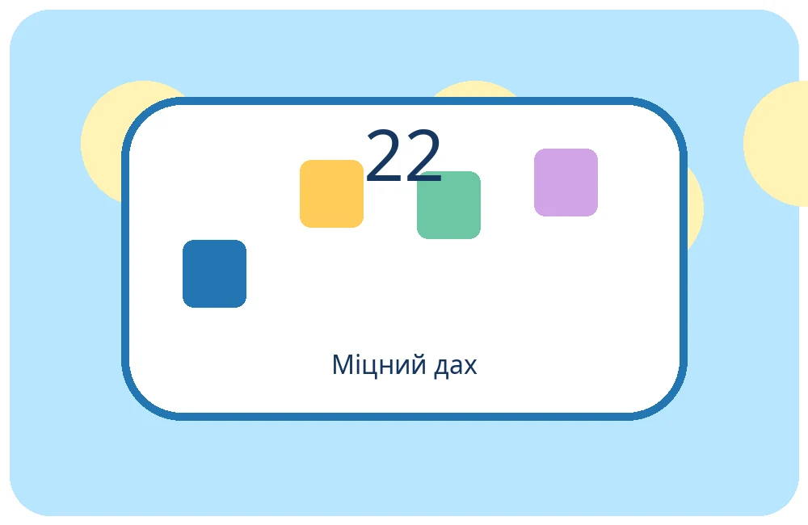
Задача 22Дах для макета з паперу2–4 класиЗадача 23Тихе повідомлення2–4 класи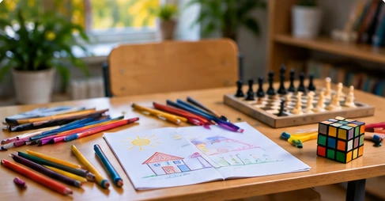
Задача 24Один стіл — багато занять2–4 класиЗадача 25Сніговик, який тане повільніше2–4 класи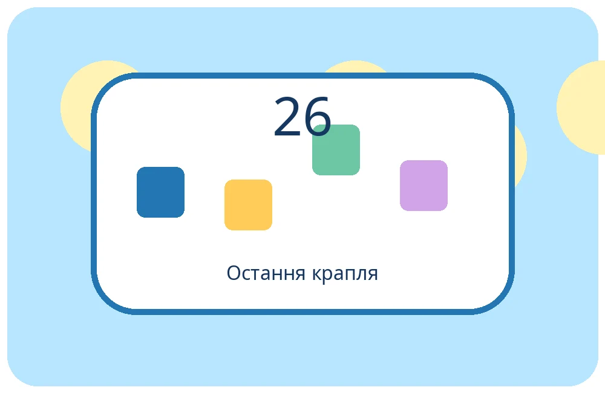
Задача 26Остання крапля2–4 класи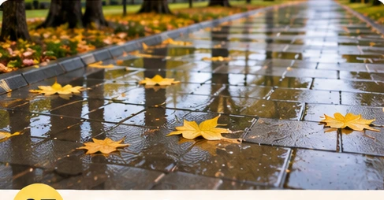
Задача 27Доріжка після зливи3–4 класи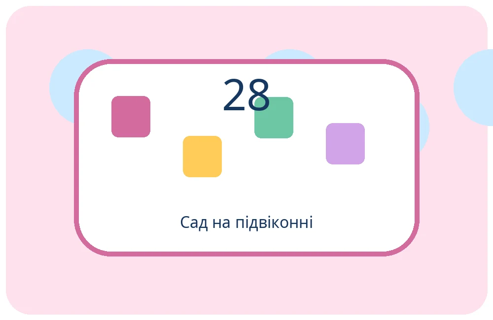
Задача 28Більше зелені на підвіконні3–4 класи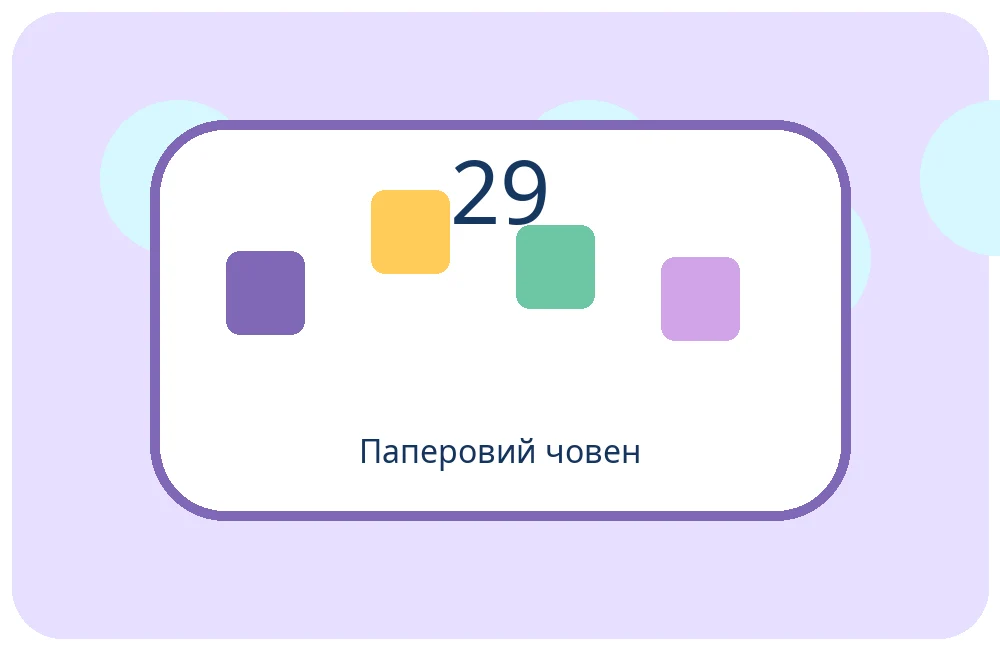
Задача 29Човник для вантажу3–4 класи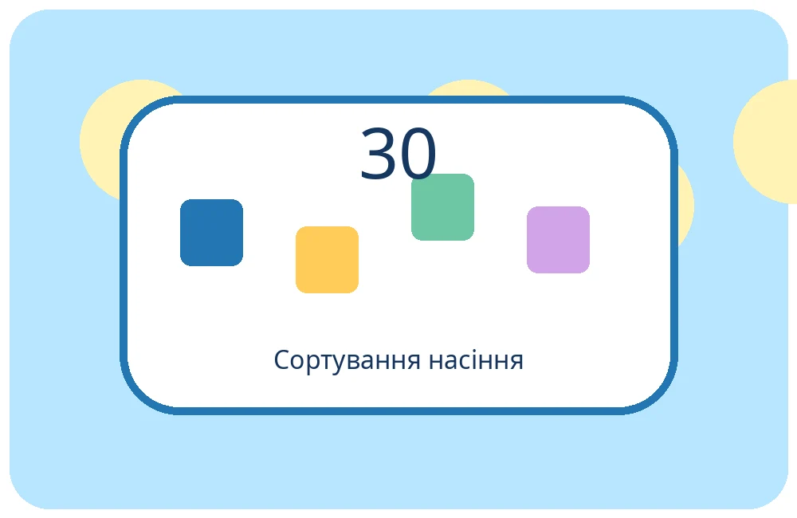
Задача 30Насіння без ручного сортування3–4 класиСигнали, енергія та довкілля
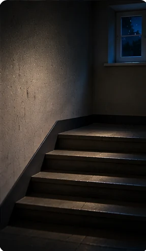
Задача 31Світло для темного куточка3–4 класи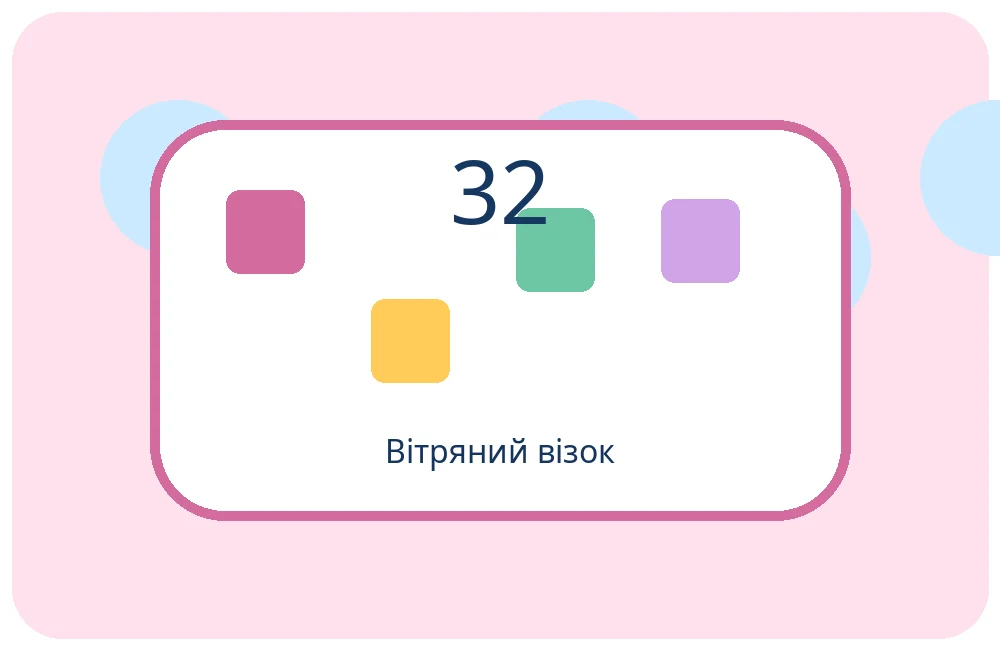
Задача 32Вітер рухає візочок3–4 класи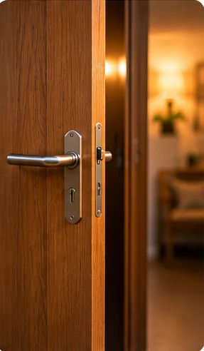
Задача 33Сигнал без звуку3–4 класи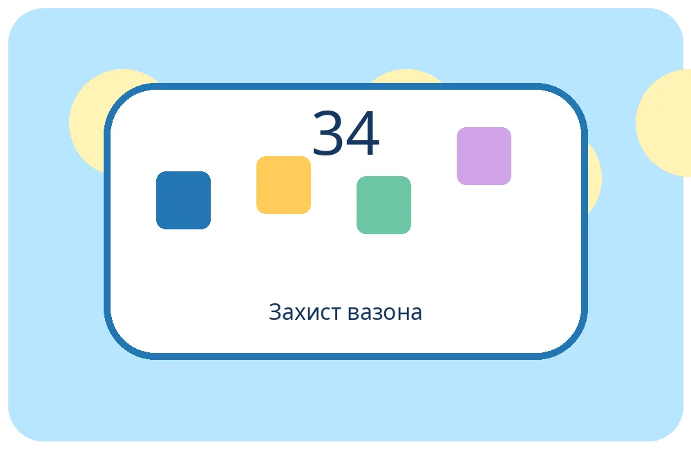
Задача 34Рослина під дощем3–4 класи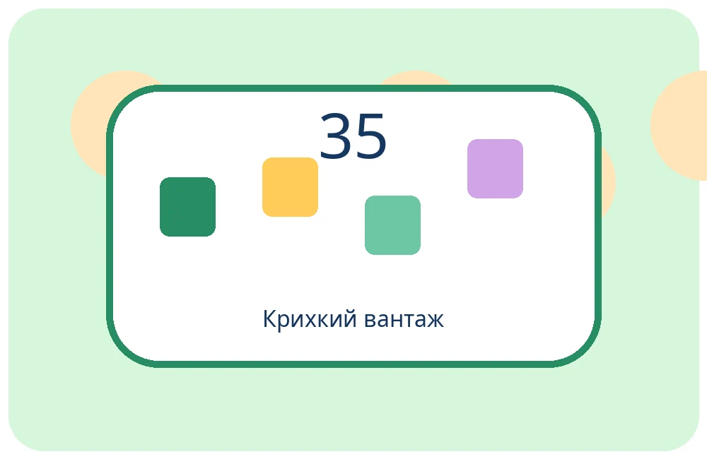
Задача 35Упаковка для крихкої прикраси3–4 класи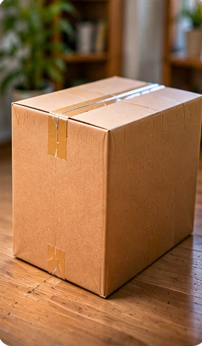
Задача 36Коробка без піднімання3–4 класи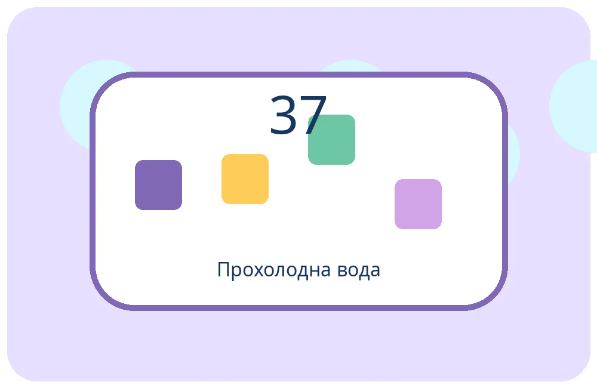
Задача 37Прохолодна пляшка на пікніку3–4 класи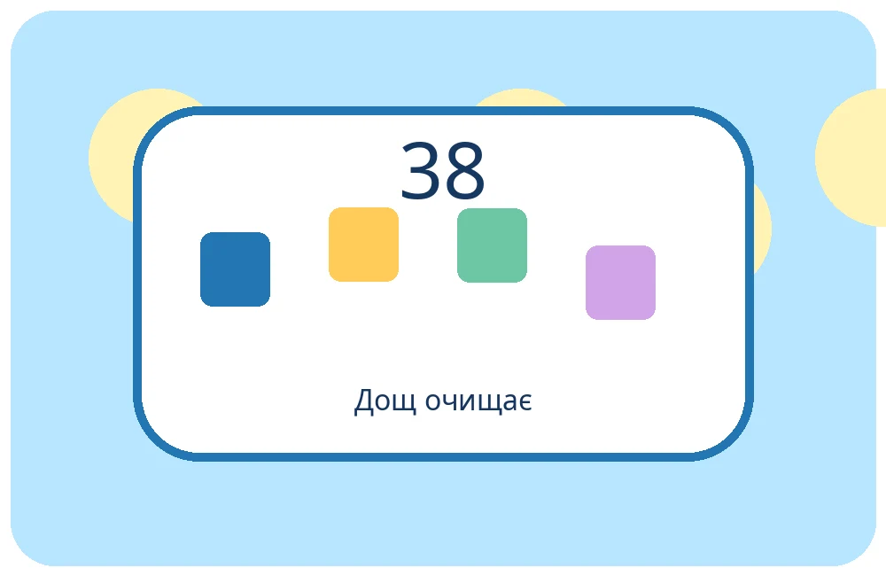
Задача 38Дощ допомагає прибирати3–4 класиЗадача 39Папірці після майстерки3–4 класи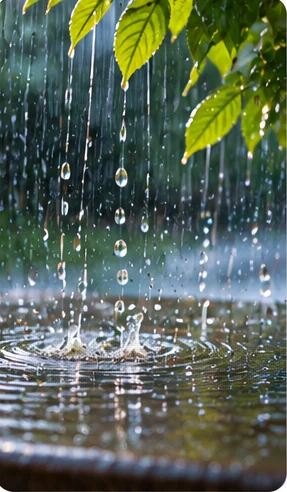
Задача 40Музика дощу3–4 класи